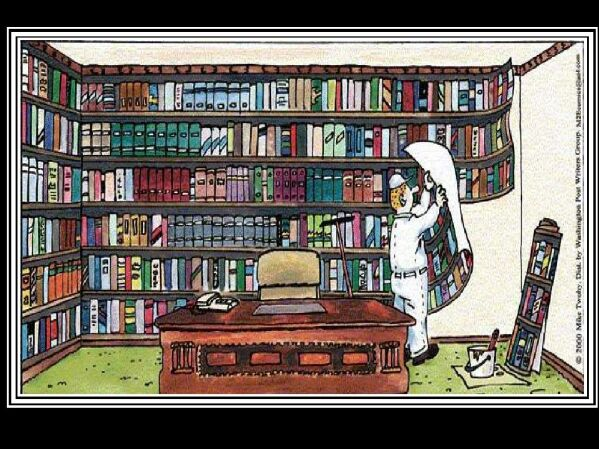

LINKS DAS MINHAS PÁGINAS SELECIONADAS
Esta página deveria ser voltada para o aspecto da informação. Aqui você encontraria os links que o levariam à sites úteis, interessantes ou engraçados. Entretanto, com o aparecimento de sites específicos de busca, competentíssimos, como o Google, por exemplo, fica difícil indicar algo que não se possa achar por lá, com muita facilidade. Relaciono abaixo, portanto, apenas aqueles blogs que visito e que foram criados por amigos meus, sites estes de amigos que conheci pela internet.
Aqui existiam mais links, porém como os sites eram antigos infelizmente muitos já não existem mais. Mais tarde acrescentarei outros nomes à esta lista, que vai crescer bastante.
